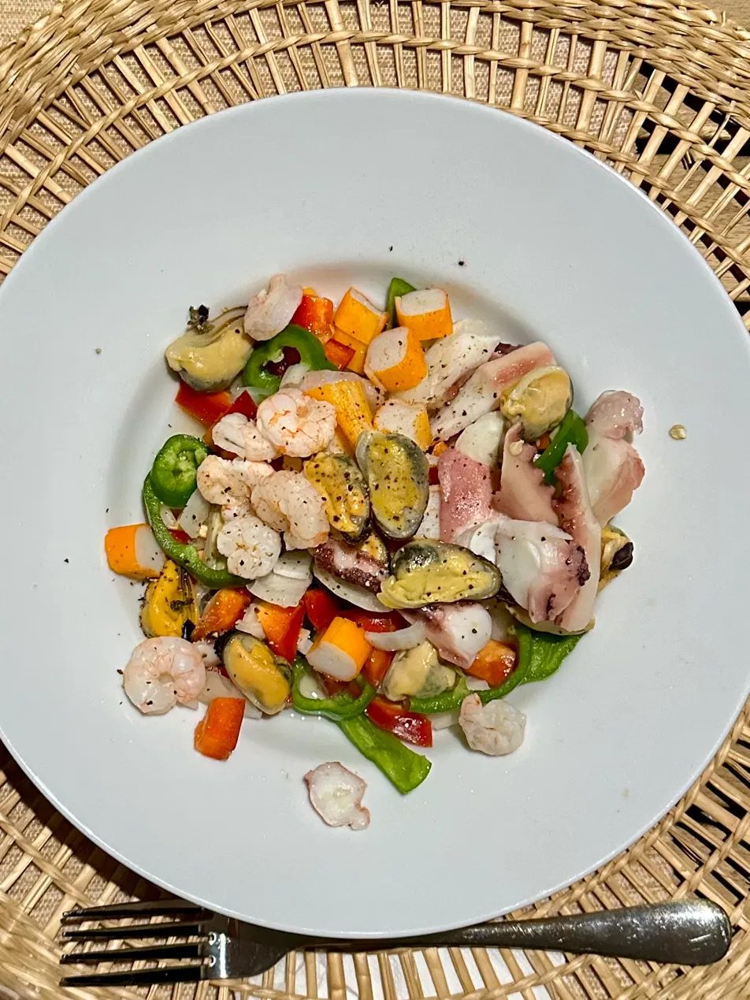

Salpicón de marisco
Ingredientes
½ sobre de rodajas de potón (congelado)
12 mejillones cocidos (congelados)
12 gambas cocidas (congeladas)
6 palitos de surimi
¼ de pimiento rojo
¼ de cebolla
Preparación
En un bol.
Poner el
potón, los mejillones y las gambas
a descongelar. Mientras, cortar el
pimiento, el surimi y la cebolla
a taquitos y echar en el bol.
Aliñar.
Añadir
aceite, vinagre y pimienta
.
